Checks and decisions
Why S1 needed checking
The tests prove that the network agrees with itself. They cannot prove that it matches the street. So I count S1 as finished only when every doubtful place has a recorded decision.
To find those places, I compared S1 with two independent sources, both downloaded on 7 October 2026. OpenStreetMap is mapped by volunteers, which makes it a useful second opinion without authority. The city’s bike network holds the off-street paths that are missing from the street file. When both sources agree, my confidence goes up. The final word is a photo or a visit.
The checkpoints

Decisions
I looked at each checkpoint in Google Street View, and in Mapillary where Street View was old. Each decision is recorded with its evidence and the date of that evidence. The city’s data is never edited; S1 applies my decisions on top of it.
| Place | Decision | Evidence (date) | |
|---|---|---|---|
| C01 | Rue de la Commune under Autoroute 10 | An overpass: the two roads cross without meeting, so there is no junction. | Street View; OpenStreetMap marks a bridge (2025-09) |
| C02 | Rue Smith (Place des Aiguilleurs) | Walk only. It is a paved pedestrian plaza, with only service vehicles seen. | Street View; OpenStreetMap (2020-10) |
| C03 | End of Rue Dalhousie | A real dead end: a gate closes the lane along the railway wall. | Street View (2016-08) |
| C07 | End of Rue du Square-Gallery | A dead end for cars; walkers continue to the canal path (C16). | Street View (2014-07) |
| C08 | End of Rue Richmond | A dead end for cars; walkers continue to the canal path (C16). The footbridge across the canal leads out of the area and is left out. | Street View (2014-08) |
| C09 | East end of Rue des Bassins | A real dead end: private parking. | Street View (2020-11) |
| C10 | Path by the police station (Dalhousie and William) | No change: it touches the network at one end only. | Street View (2024-08) |
| C11 | ÉTS campus walkway (Barré and Eleanor) | No change: it only leads into the campus. | Street View (2021-04) |
| C13 | Walkway off Notre-Dame and de l’Aqueduc | No change: a private walkway leading out of the area. | Street View (2024-08) |
| C14 | Canal path at Place des Aiguilleurs | Part of the canal path (C16). | Street View (2014-08) |
| C15 | Wellington bridge | No change: the bridge is already in the network beyond the boundary. | Street View (2025-06) |
| C16 | Lachine Canal path | Added, walk only, using the city’s bike network and joined to every street end it passes. | Street View (2024-08); the city’s bike network, with OpenStreetMap as a second opinion |
| C17 | Path to the Little Burgundy sports centre | No change: it leads out of the area. | Street View (2024-08) |
| C18 | New park between Rue des Bassins and Rue William | Added the two park paths, walk only, drawn from OpenStreetMap. | Mapillary; OpenStreetMap (2026-08) |
These are built as connected, as an assumption, and drawn in pink on every sheet. If a photo or a visit confirms one, its status becomes confirmed. If it shows the street really stops, it becomes rejected. The record stays, and S1 treats the street as a dead end again.
At the end of Rue Brennan (C04), cars stop at the bollards. I assume walkers carry on along a footway through the block to Rue Ann and de la Commune, and that this footway is open (C12). Look for yourself at the end of Brennan and the block.
At the end of Rue Ann (C05), I assume the street joins the same footway, 24 m away. The only view is Street View from 2007.
What Mapillary showed (October 2026)
In October I searched Mapillary for every photo near the footway, leaving out those taken from the motorway above it. The question that would settle most was whether anyone had walked along the footway with a camera. Nobody had: of 292 photos from 2023 to 2025, the few that lie on it were taken from cars at its south tip.
At the north end, a photo from May 2024 shows the bollards with a no-entry sign for cars that carries a panel for walkers and bicycles, and paving going on past them. The south end was a gravel strip in 2023, then a building site and a parking compound into 2024; the 2025 photos are too tilted to show it. Every photo found is listed in this table.
My reading: the north end invites walkers in, and the south end was closed until at least May 2024. The photos cannot say whether the footway is open today, or whether Ann reaches it, so all three stay assumed. A visit would settle them, with photos at each end.

At the end of Rue Smith (C06), walkers continue across the open plaza of Place des Aiguilleurs towards the canal. A straight 41 m line joins the end of Smith to Place des Aiguilleurs. The line is only a drawing of that crossing. The evidence is Mapillary photos from August 2016 and March 2024.

C06 did not come right the first time. The first build joined Smith to the nearest street end, which was the other end of Smith itself, so the link connected nothing. The S2 stress test caught it. Once that was fixed, nothing lay within the automatic 25 m reach, and Smith went back to being a dead end. Then the photos decided: a decision taken from a photo may now name the street to join and reach up to 60 m.
Boulevard Robert-Bourassa (C19): both carriageways now belong to the study area. The city codes them as a pair of one-way roads, and the boundary ran between them. The evidence is the city’s street file and five traffic lights on the east carriageway (October 2026).
What changed in the network
The canal path (C16) and the two park paths (C18) are in, for walkers only. Dead ends went from 12 to 2, at Dalhousie and the east end of Bassins, both confirmed. Brennan and Ann are now connected by assumption. Smith is connected from photos. Robert-Bourassa is now in full, and S1 also keeps the edge (S1 Streets).
Each end of the path joins whatever is nearest within 25 m: a junction, or a street that gets cut at that spot. A junction wins when it is at most 5 m further away. A street dead end within 25 m of the middle of a path is joined to it too. This is how the Allées reach the canal.
Evidence
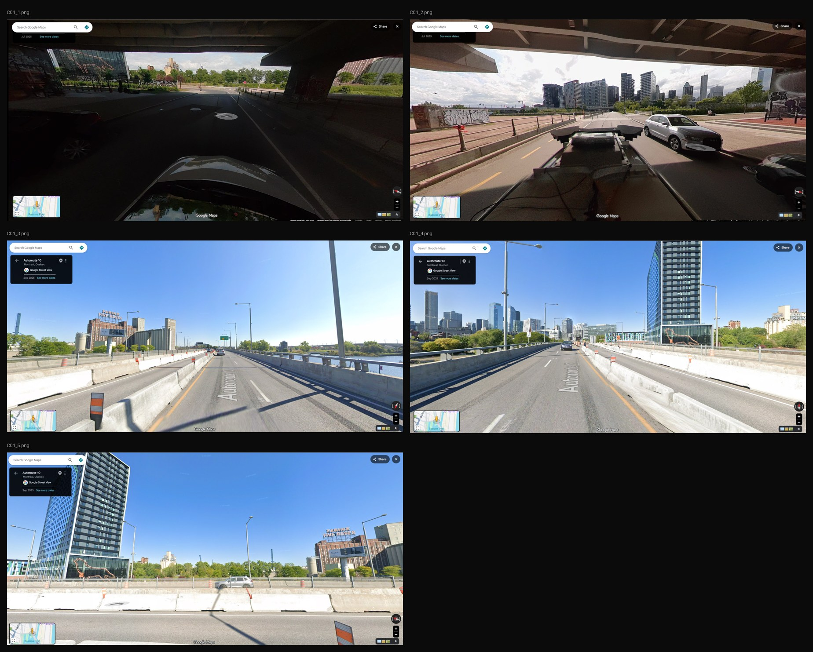 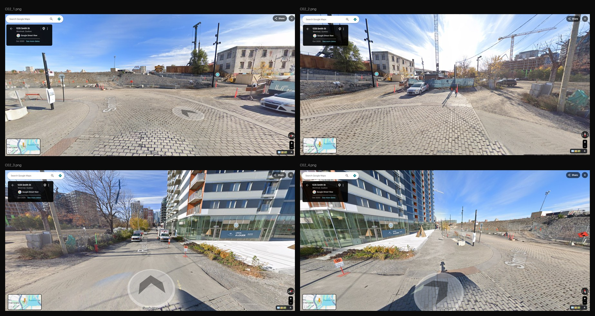 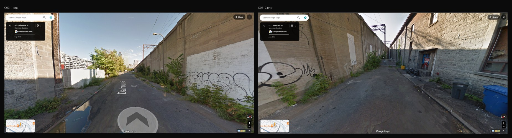 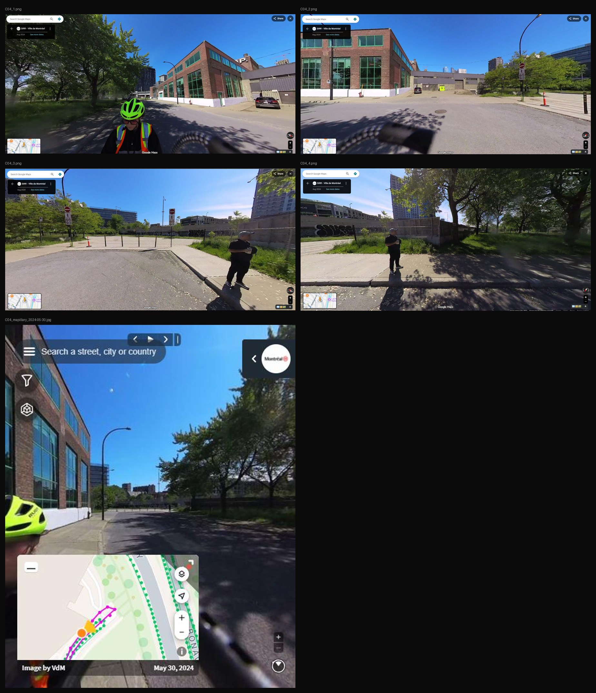 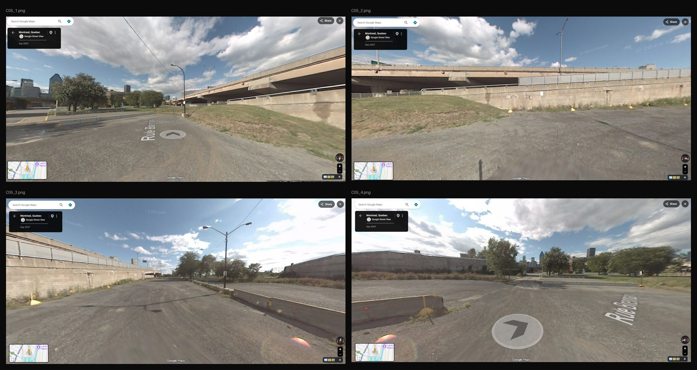 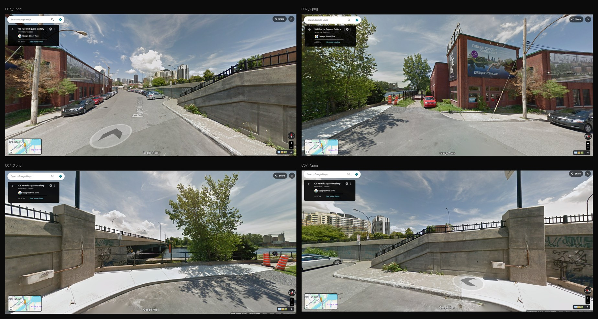 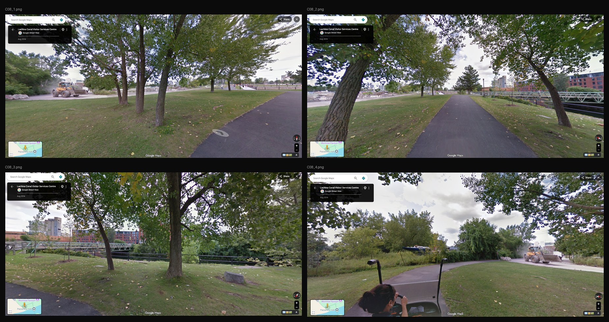 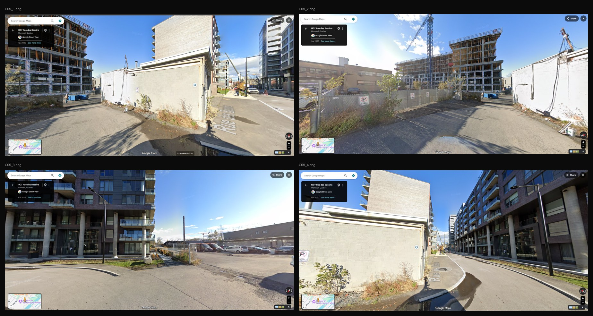 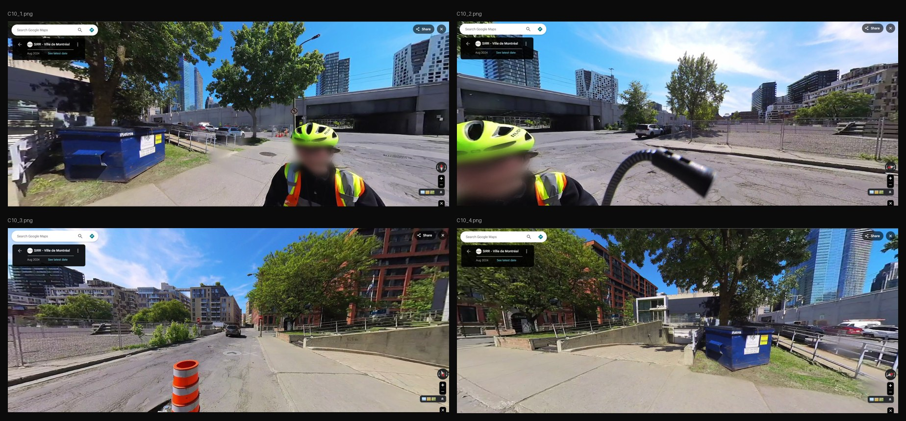 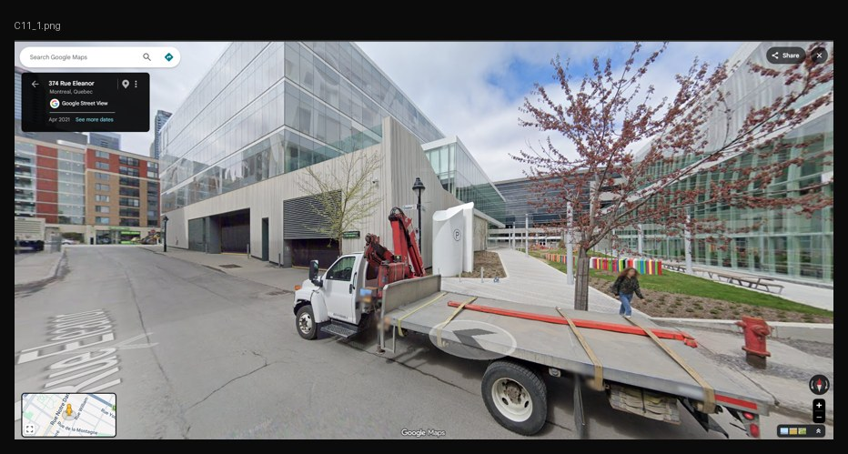 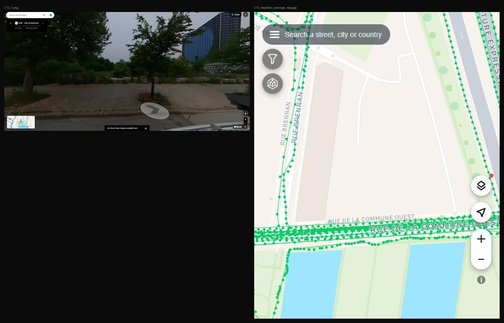 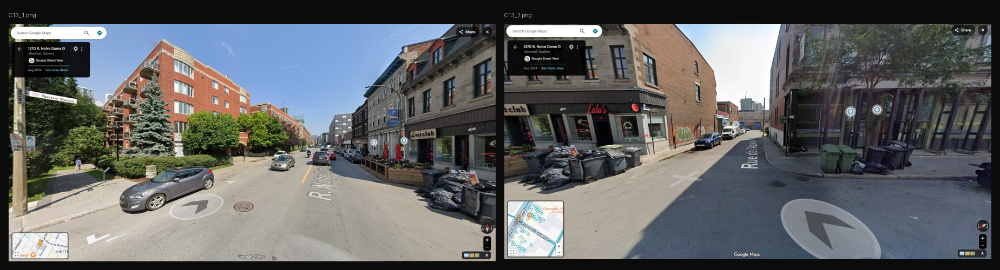 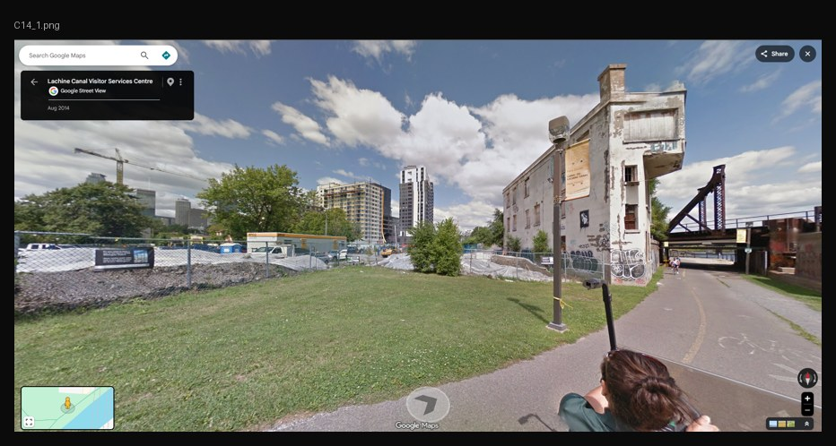 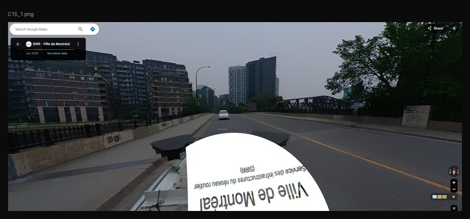 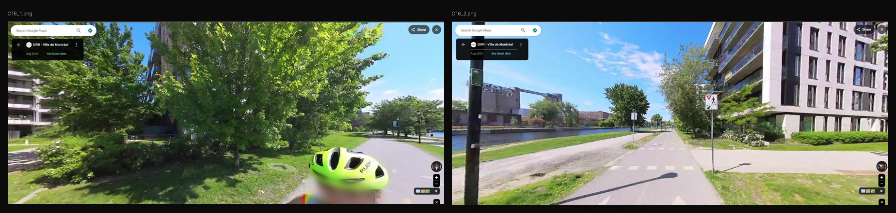 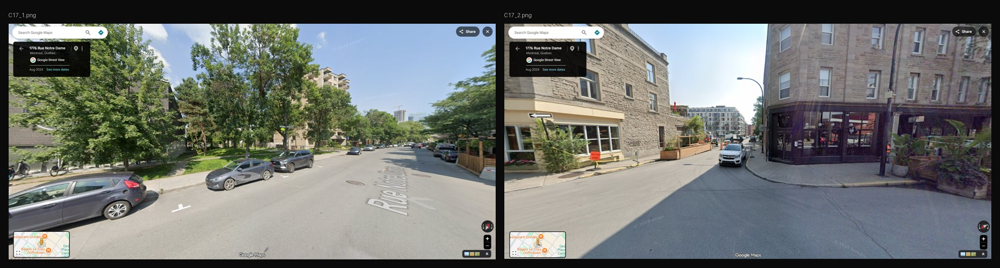 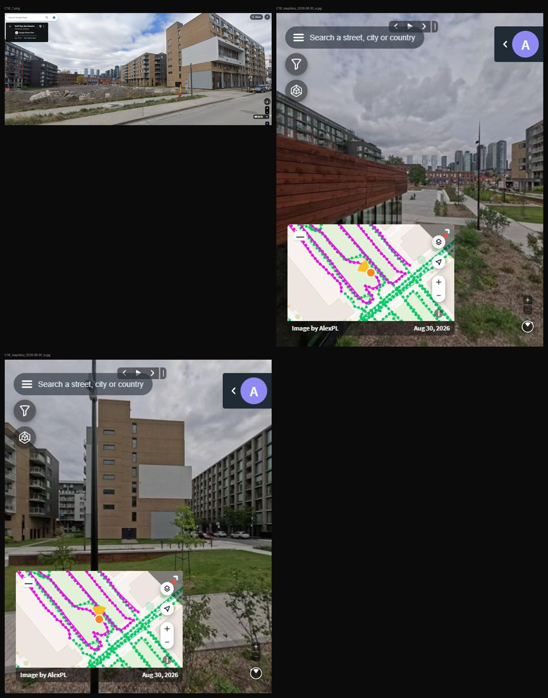


C06 used Mapillary photos from 2016 and 2024.